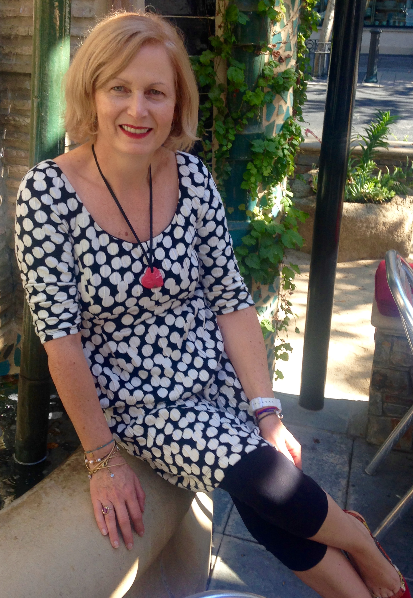

Anne Pegolotti Riou

I’m a self-taught artist from Brittany, born and raised next to the ocean—it’s my element. My greatest inspiration comes from my deep love for the ocean and nature. The sea’s ever-changing beauty, with its colors—blues, turquoise, soft pinks, coral, and the whites and golds of the waves—fills me with both energy and peace.
My style is bold, abstract, and full of vibrant colors. What drives my work is creating movement and energy on the canvas. I focus on lines and shapes that flow like the waves of the sea or the petals of flowers.
I use acrylics and enjoy experimenting with textures, unblended colors, and mixing brush and palette knife techniques to add depth and rhythm to my paintings.
For me, art is a way to express emotions that go beyond what’s visible. I love seeing how viewers react to the movements and colors in my work, knowing that my paintings can bring hope, happiness, and spark creativity. Imagination has no limits, and I want my paintings to invite people to dream and find their own meaning in the lines, shapes, and colors I create.
My work has been shown at Art Ark Gallery in San Jose, CA, and Mirada Art Gallery in Half Moon Bay. Six of my paintings have been featured in American Artwork Magazine (2021, 2023, 2024, 2025).
Since 2023, I’ve worked in my art studio at The Alameda Artworks at 1068 The Alameda, San Jose, CA 95126.
My painting Le Tourbillon de la Vie (also featured in American Artwork Magazine) is currently on display at The 480 Lighthouse Gallery in Pacific Grove, Monterey.
My series "Un Jour Viendra" is on exhibit at the store Gitane, on Santa Cruz Ave, Menlo Park.
Through my art, I hope to share my love for the ocean, nature, and the emotions they inspire, offering viewers a glimpse of the beauty and energy I find in the world around us.